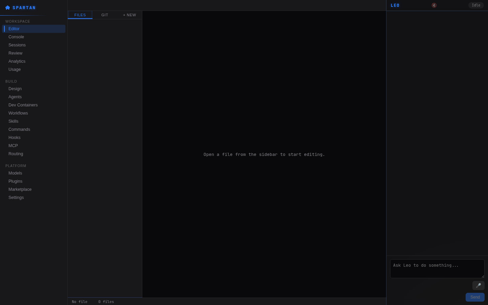
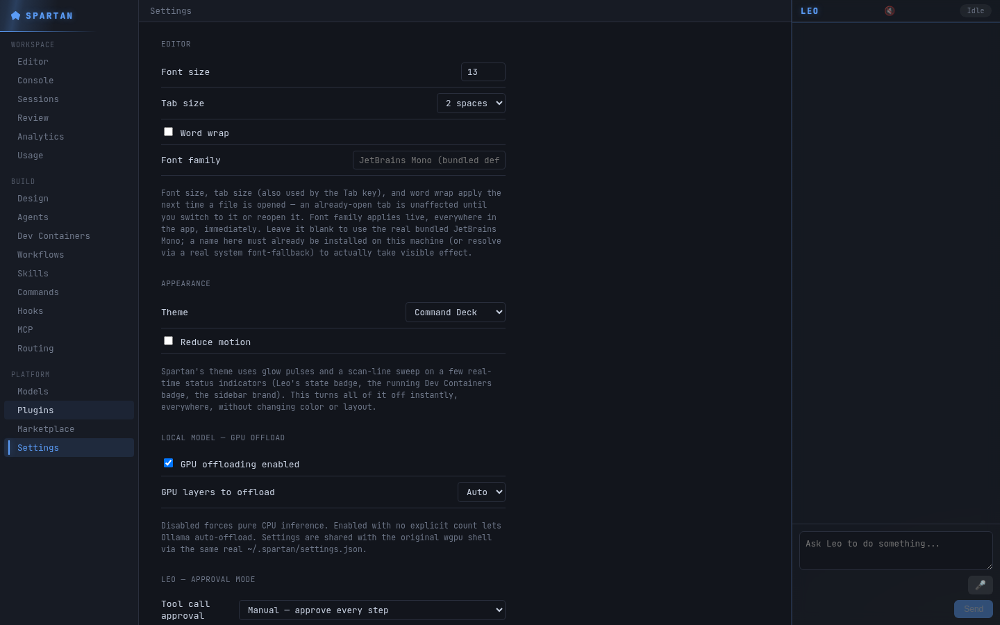
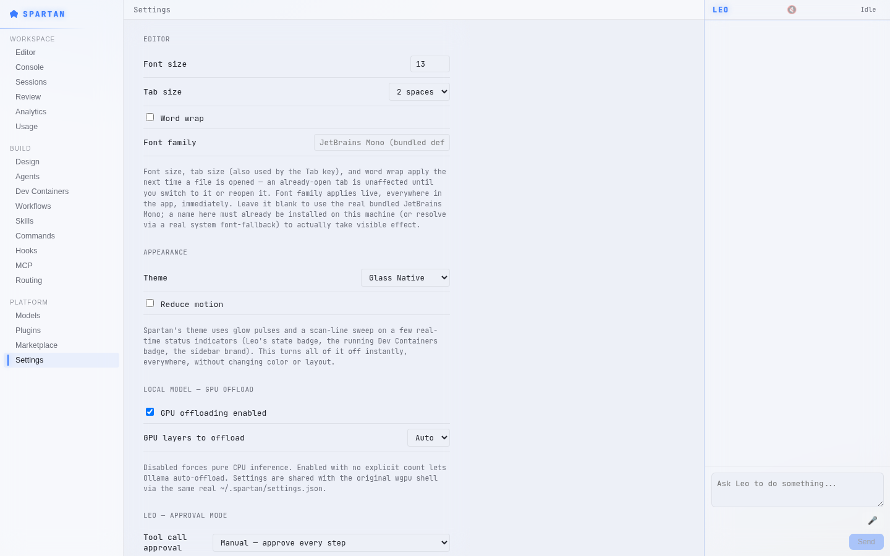
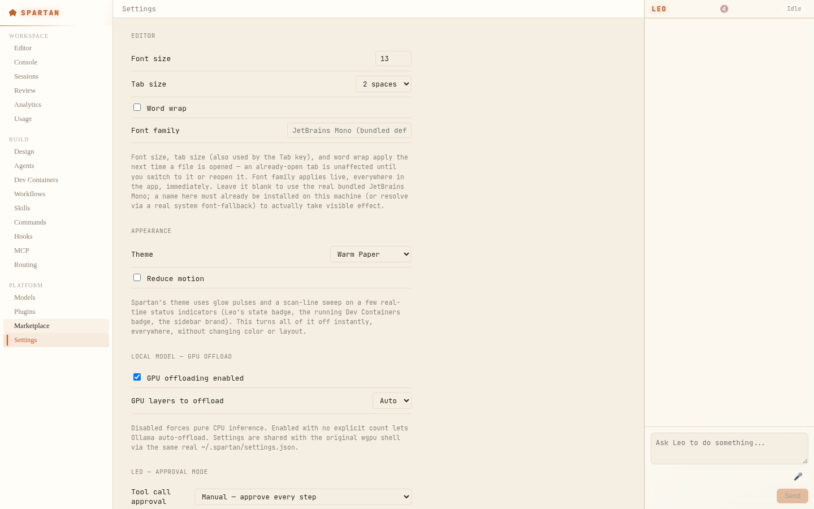
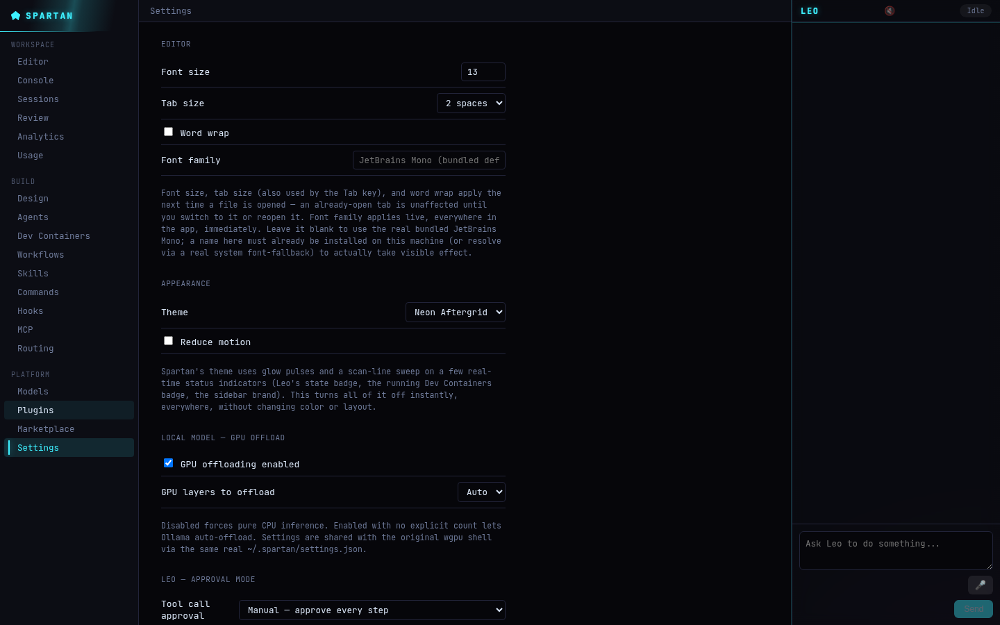

Real rope buffer. Real tree-sitter syntax highlighting. Real LSP/DAP. Real git. And Leo — an in-house coding agent with a plan → approve → execute → verify loop, not a chat window bolted onto an editor. No VS Code, Monaco, or CodeMirror code anywhere in the stack.

This page tracks what's genuinely implemented and tested versus reference-only. Here's what's real today.
A real plan → approve → execute → verify loop with checkpointing, path-jailed tool execution, secrets redaction, and a hard approval gate on every destructive action by default.
Ollama, Claude, LiteLLM, LM Studio, and direct in-process llama.cpp GGUF inference with real grammar-constrained native tool calling — swap providers from one Settings screen.
Live diagnostics, hover, autocomplete, and full breakpoint/step debugging, driven by real language servers and debug adapters — not simulated.
Two-way AST sync between a live-rendered visual canvas and your real JSX source — click a component, edit its props, and the source file updates in place, formatting preserved.
Real containers.dev-spec Docker lifecycle management, straight from the editor — detect, start, exec into, and stop a project's dev container without leaving the IDE.
An Electron + React desktop shell, a client-side browser IDE (File System Access + WASM), and a native mobile companion app — all driving the same real Rust engine.
Seven real, live, user-selectable themes — switch instantly from Settings, no restart required. Colors below are the actual rendered output, not mockups.




Every installer below is a real build produced by this project's own release pipeline and served directly from this page — nothing hand- assembled, no source code exposed. This is a beta: read each card's own status line before installing.
The primary UI: real Electron + React shell driving the Rust core over local IPC. A full NSIS installer — install-path choice, Start Menu/Desktop shortcuts, a real uninstaller.
first CI-built attempt this release, not yet hand-verified; unsigned Download Setup.exe →
Same real Electron shell, packaged as a .dmg —
built on a real GitHub-hosted Mac runner, no Apple hardware of
our own required to produce it.
A genuine apt/dpkg-installable
.deb, or a portable no-install .AppImage
if you'd rather not install system-wide.
The File System Access + WASM browser IDE — use it live, no install needed.
the exact build served live below Try it live →
A real Expo/React Native app for reviewing agent runs on the go.
Debug-signed .apk — enable "unknown sources" to
install.
No install. Opens a real local folder via the File System Access API and edits it with a real WASM-compiled buffer engine — the same rope/undo-tree code the desktop core uses.
Launch Spartan Web →